Speaker notes for the 20-slide deck: for every slide, what it shows, how to say it, the numbers to remember, and short answers to the questions a panel is likely to ask. The thumbnails are the slides as they were last generated. Every number here is the deck's own; keep the notes off screen and never read them aloud word for word.
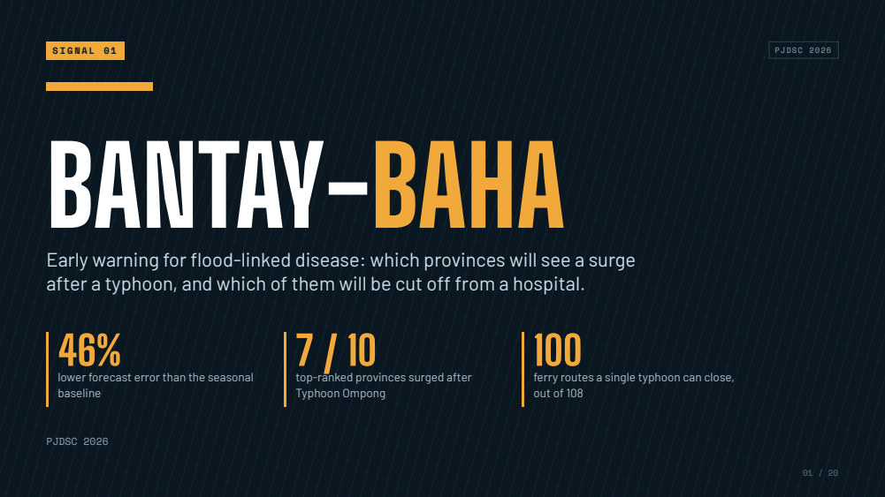
What it shows. The one-sentence promise and three headline results: 46% lower forecast error than the seasonal baseline, 7 of the 10 top-ranked provinces surged after Typhoon Ompong, and up to 100 of 108 ferry routes closed by a single typhoon.
Say it like this. "Bantay-Baha is an early warning for flood-linked disease. For any typhoon track it tells a health office two things: which provinces will see a surge, and which of them will be cut off from a hospital."
Numbers to remember.
If asked.
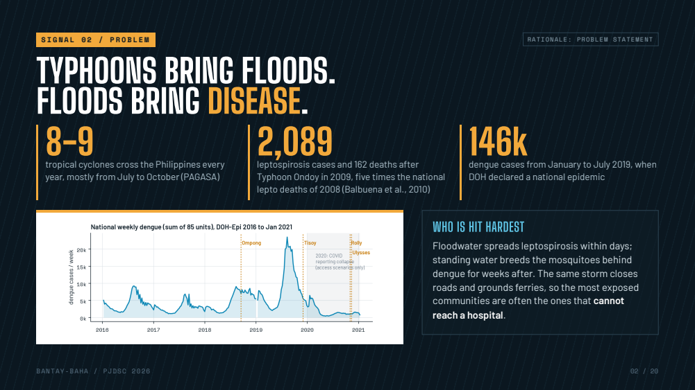
What it shows. Why this matters: 8-9 tropical cyclones cross the country every year; Ondoy (2009) was followed by 2,089 leptospirosis cases and 162 deaths; 2019 brought a national dengue epidemic (146k cases January-July).
Say it like this. "Floodwater spreads leptospirosis within days, and standing water breeds dengue mosquitoes for weeks after. The same storm closes roads and grounds ferries, so the most exposed communities are often the ones that cannot reach care."
Numbers to remember. 8-9 cyclones a year (PAGASA); 2,089 cases and 162 deaths after Ondoy (Balbuena et al., 2010), five times the national leptospirosis deaths of 2008; 146k dengue cases January-July 2019.
If asked.
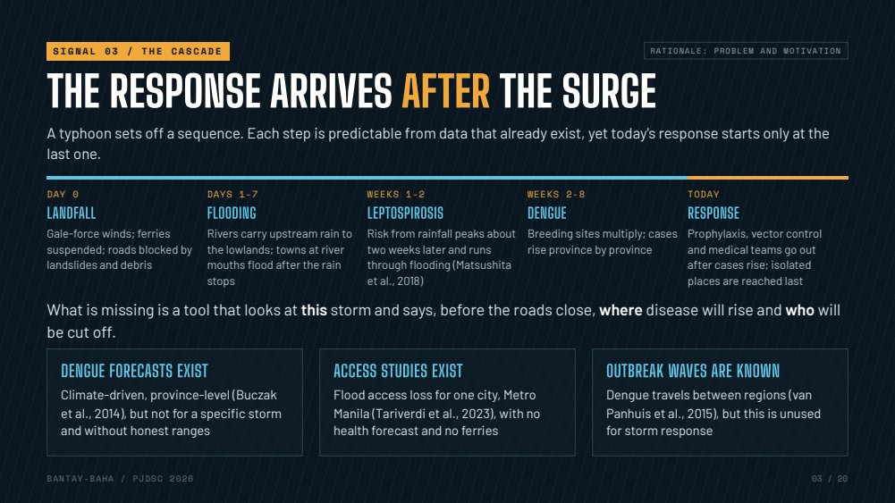
What it shows. The sequence after landfall: day 0 winds and closed ferries, days 1-7 river flooding, weeks 1-2 leptospirosis, weeks 2-8 dengue; today's response starts only after cases rise. Below: what already exists and what is missing.
Say it like this. "Each step is predictable from data that already exist, yet the response starts at the last one. Dengue forecasts exist, access studies exist, outbreak waves are known; nobody joins them for a specific storm."
Numbers to remember. Leptospirosis risk peaks about two weeks after heavy rain (Matsushita et al., 2018).
If asked.
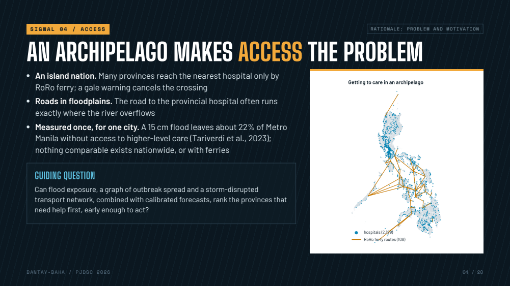
What it shows. Why access is the second half of the problem: island provinces depend on RoRo ferries that stop in a gale; roads to hospitals run through floodplains; the only published measurement is one city.
Say it like this. "A 15-centimetre flood leaves about 22% of Metro Manila without access to higher-level care. Nobody has measured that nationwide, or with ferries. So our guiding question is: can flood exposure, outbreak spread and a storm-disrupted transport network, with calibrated forecasts, rank the provinces that need help first, early enough to act?"
Numbers to remember. ~22% of Metro Manila cut off at 15 cm (Tariverdi et al., 2023).
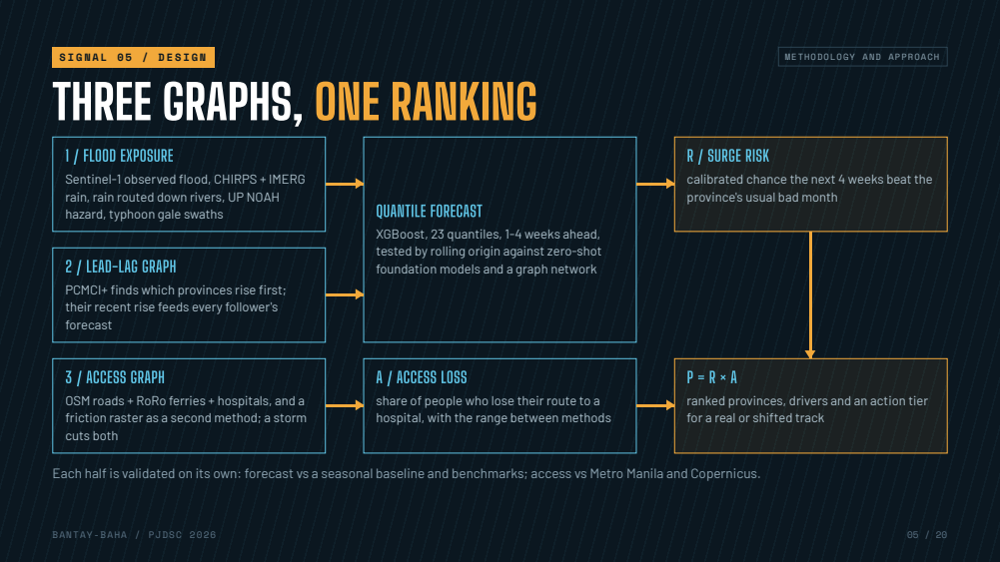
What it shows. The architecture. (1) Flood exposure: Sentinel-1 observed flood, CHIRPS and IMERG rain, rain routed down rivers, UP NOAH hazard maps, gale swaths. (2) Lead-lag graph: which provinces rise first, fed into the forecast. The quantile forecast gives R, the surge risk. (3) Access graph: roads, ferries, hospitals, plus a friction raster as a second method, gives A, the access loss. Priority P = R x A.
Say it like this. "Two halves, each validated on its own. Risk comes from a forecast that reads flood, rain, storms and leader provinces. Access comes from a transport network the storm cuts. Multiply them, and the provinces at the top are the ones that are both likely to surge and hard to reach."
If asked.
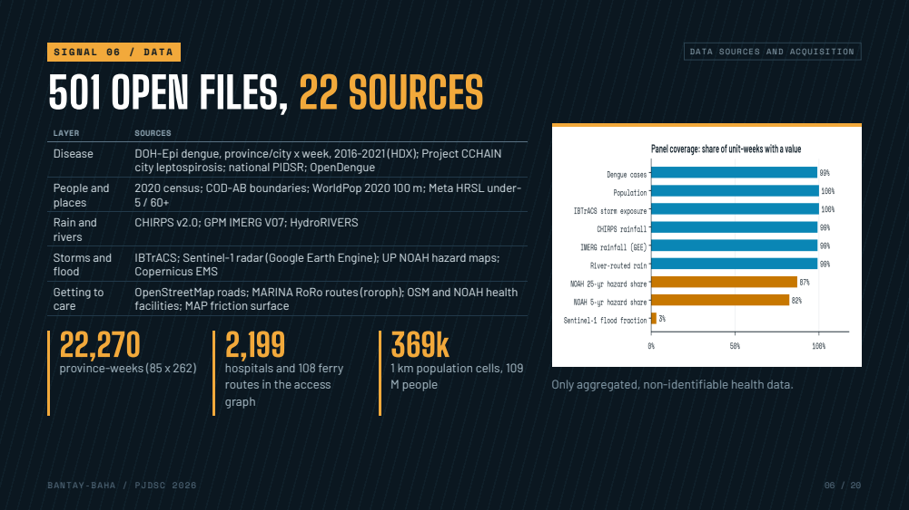
What it shows. Every source by layer: disease, people and places, rain and rivers, storms and flood, getting to care. The scale: 22,270 province-weeks, 2,199 hospitals, 108 ferry routes, 369k one-kilometre population cells covering 109 M people.
Say it like this. "Everything is open data, downloaded by script with a checksum, so anyone can rebuild it. Only aggregated, non-identifiable health data are used."
Numbers to remember. 22,270 = 85 provinces x 262 weeks (2016-2021). 369k cells, 109 M people (WorldPop 2020).
If asked.
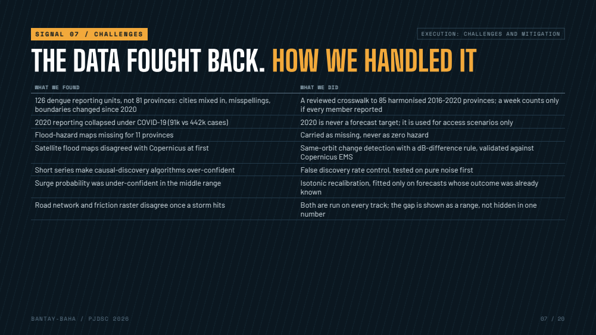
What it shows. Eight problems and what we did about each: messy reporting units, the 2020 COVID collapse, missing hazard maps, radar flood that disagreed at first, over-confident causal discovery, under-confident surge probability, and two access methods that disagree.
Say it like this. Pick two: "2020 dengue reporting collapsed under COVID, 91k cases against 442k in 2019, so 2020 is never a forecast target. And where a flood-hazard map is missing we carry it as missing, never as zero hazard: not knowing is not the same as safe."
Numbers to remember. 126 reporting units -> 85 provinces; 91k vs 442k cases (2020 vs 2019); hazard maps missing for 11 provinces.
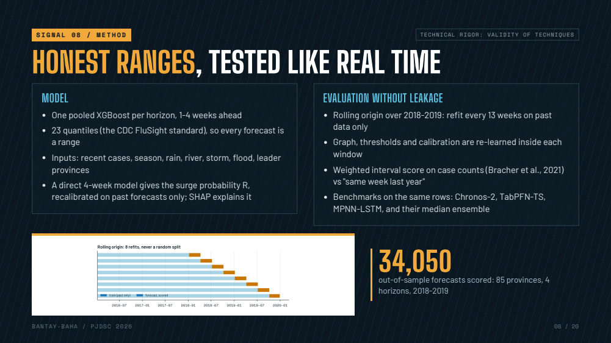
What it shows. The model (one pooled XGBoost per horizon, 1-4 weeks ahead, 23 quantiles; a direct 4-week model for the surge risk R) and the evaluation (rolling origin over 2018-2019, refit every 13 weeks on past data only, scored with the weighted interval score against "same week last year" and three benchmark models).
Say it like this. "We never use a random split. Every 13 weeks we retrain on the past only and forecast the next block, exactly as it would run live. The lead-lag graph, the surge thresholds and the calibration are re-learned inside each window, so nothing leaks from the future."
Numbers to remember. 23 quantiles (the CDC FluSight standard); 34,050 out-of-sample forecasts; 85 provinces x 4 horizons over 2018-2019.
If asked.
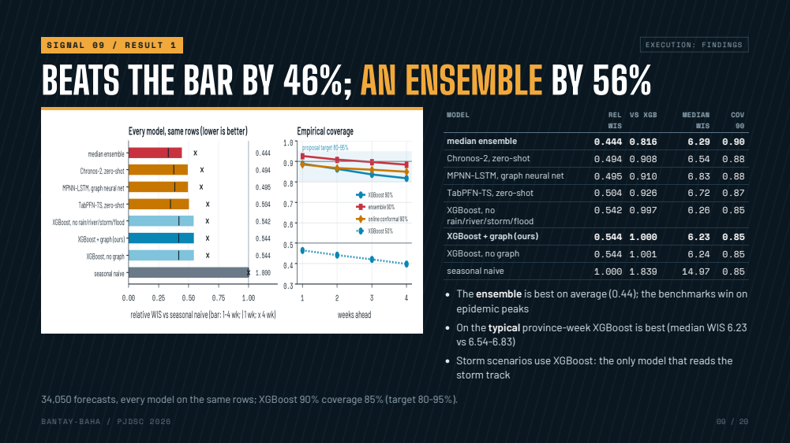
What it shows. Every model on the same 34,050 forecasts. Relative WIS (lower is better, seasonal naive = 1): median ensemble 0.444, Chronos-2 0.494, MPNN-LSTM 0.495, TabPFN-TS 0.504, XGBoost 0.544. XGBoost has the best median WIS (6.23) and 85% of outcomes inside its 90% range.
Say it like this. "Our model cuts the error of the seasonal baseline by 46%. Blending it with three foundation and graph models cuts it by 56%: the benchmarks are better on epidemic peaks. On a typical province-week, XGBoost is the best. The storm scenarios use XGBoost because it is the only model that reads the storm track."
Numbers to remember. 0.544 (ours), 0.444 (ensemble), 1.000 (naive); median WIS 6.23 vs 6.54-6.83; 90% coverage 85% (target 80-95%).
If asked.
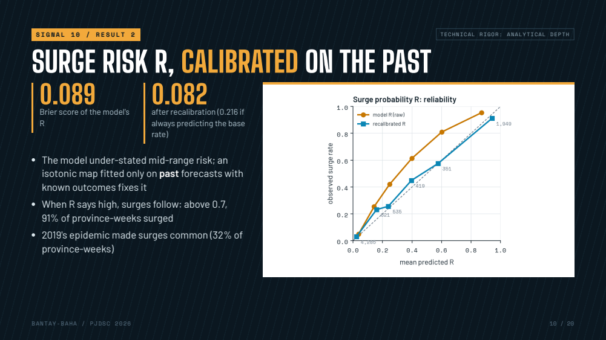
What it shows. How trustworthy the probability R is. Brier score 0.089 for the model's R, 0.082 after recalibration, against 0.216 for always predicting the base rate. When R is above 0.7, 91% of province-weeks really surged.
Say it like this. "When we say 80%, it should happen about 80% of the time. The raw model was too cautious in the middle range, so we recalibrate it with an isotonic map fitted only on past forecasts whose outcome was already known."
Numbers to remember. Brier 0.089 -> 0.082 (0.216 base rate); above 0.7: 91% surged; base rate 32% of province-weeks (2019 epidemic).
If asked.
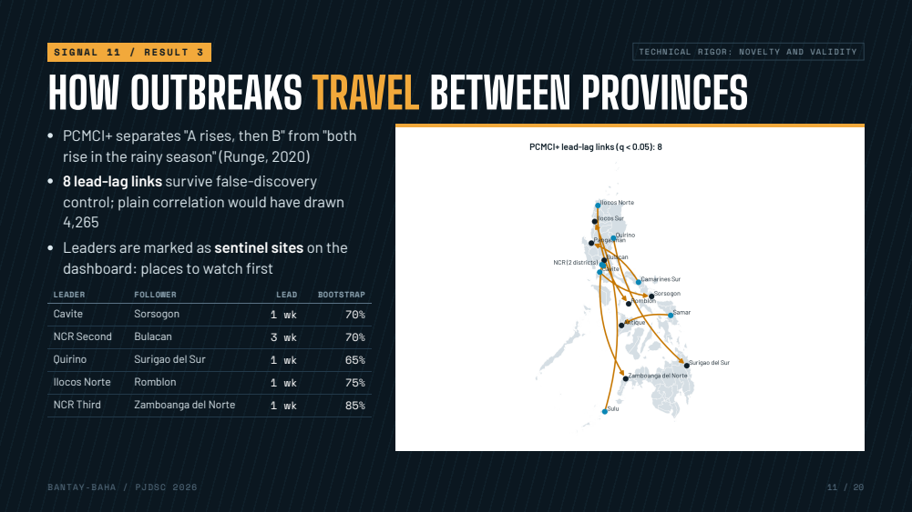
What it shows. The lead-lag graph learned with PCMCI+: 8 links survive false-discovery control where plain correlation would draw 4,265. The table lists leader, follower, lead time and bootstrap confidence.
Say it like this. "Most provinces rise together in the rainy season; that is not spread. PCMCI+ removes that shared signal and keeps only 'A rises, then B'. Eight links survive; the leaders become sentinel sites on the dashboard."
Numbers to remember. 8 links vs 4,265; lags of 1-3 weeks; bootstrap 65-85%.
If asked.
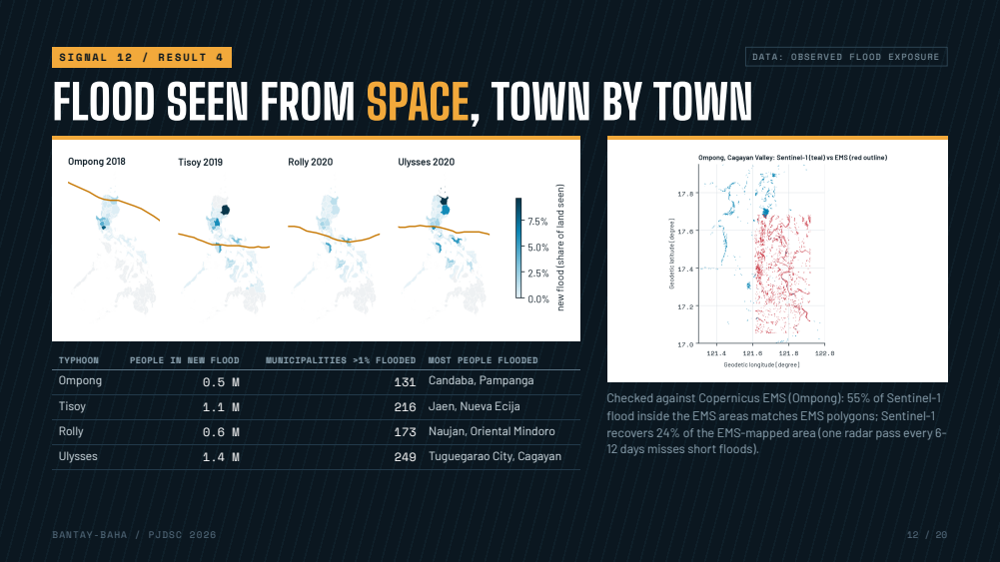
What it shows. Sentinel-1 radar flood (before/after change detection) per typhoon: people in new floodwater, municipalities more than 1% flooded, and the town with most people flooded. Checked against Copernicus EMS maps for Ompong.
Say it like this. "Radar sees through clouds. For Ulysses, 1.4 million people were in new floodwater, with Tuguegarao the worst. Against expert maps it is right 55% of the time inside the mapped areas and finds 24% of the flooded area, because one pass every 6-12 days misses short floods. So we treat it as a lower bound."
Numbers to remember. Ompong 0.5 M, Tisoy 1.1 M, Rolly 0.6 M, Ulysses 1.4 M people; precision 55%, recall 24%.
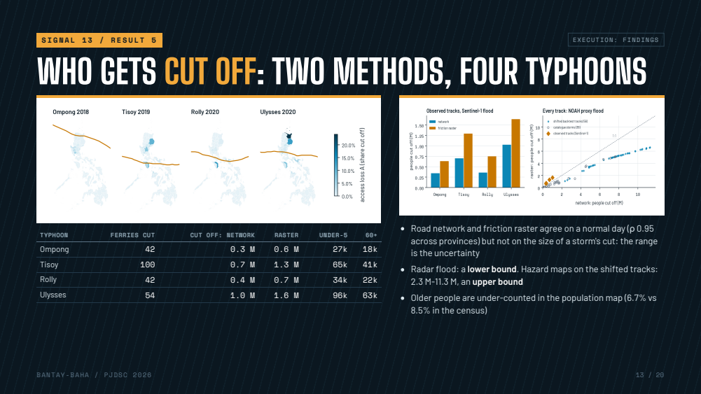
What it shows. Per typhoon: ferry routes cancelled, people cut off by the road network and by the friction raster, and children under 5 and people over 60 cut off.
Say it like this. "The two methods agree on a normal day, rank correlation 0.95 across provinces, but not on the size of a storm's cut. We show both as a range instead of hiding the disagreement in one number. Ulysses cut off one to 1.6 million people."
Numbers to remember. Tisoy: 100 ferries cancelled. Ulysses: 1.0 M (network) to 1.6 M (raster), 96k under-5, 63k aged 60+. Shifted tracks with hazard maps: 2.3 M-11.3 M, an upper bound.
If asked.
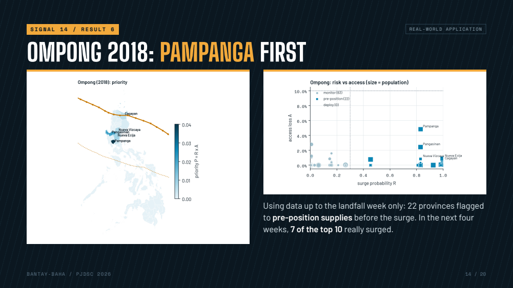
What it shows. The backtest map for Ompong with data up to its landfall week only: priority by province, the track and swath; 22 provinces flagged to pre-position supplies; 7 of the top 10 really surged.
Say it like this. "This is what the tool would have said in Ompong's landfall week. Pampanga comes first: likely to surge and with people cut off. In the next four weeks, seven of the ten provinces we ranked highest really surged."
Numbers to remember. 22 provinces pre-position; 7 / 10 surged; Pampanga R 0.83 (calibrated).
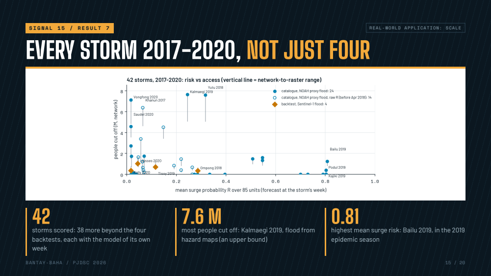
What it shows. The storm catalogue: 42 storms scored, each with a model trained only up to its own week; the largest access loss (Kalmaegi 2019, 7.6 M with hazard-map flood, an upper bound) and the highest mean surge risk (Bailu 2019).
Say it like this. "It is not tuned to four storms. Every storm that reached land from 2017 to 2020 runs through the same pipeline, with a model that knows only what was known at the time."
Numbers to remember. 42 storms (4 backtests + 38 more); 7.6 M (Kalmaegi, upper bound); R 0.81 (Bailu, 2019 epidemic).
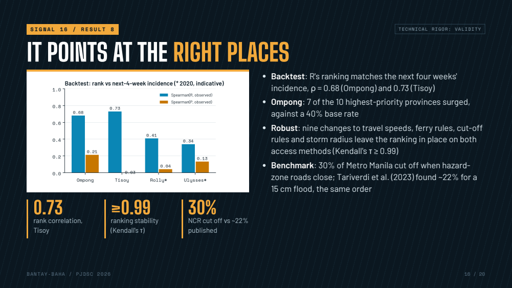
What it shows. Validation: R's ranking against the next four weeks' incidence (rank correlation 0.68 for Ompong, 0.73 for Tisoy); 7 of 10 vs a 40% base rate; stability under nine changes to the access settings (Kendall's tau >= 0.99); Metro Manila benchmark 30% vs about 22% published.
Say it like this. "Three checks. The ranking matches what happened. It does not change when we change travel speeds, ferry rules or the storm radius. And our Metro Manila cut-off is the same order as the published study."
Numbers to remember. rho 0.68 / 0.73; 7 of 10 vs 40%; tau >= 0.99 over nine variants; 30% vs ~22%.
If asked.
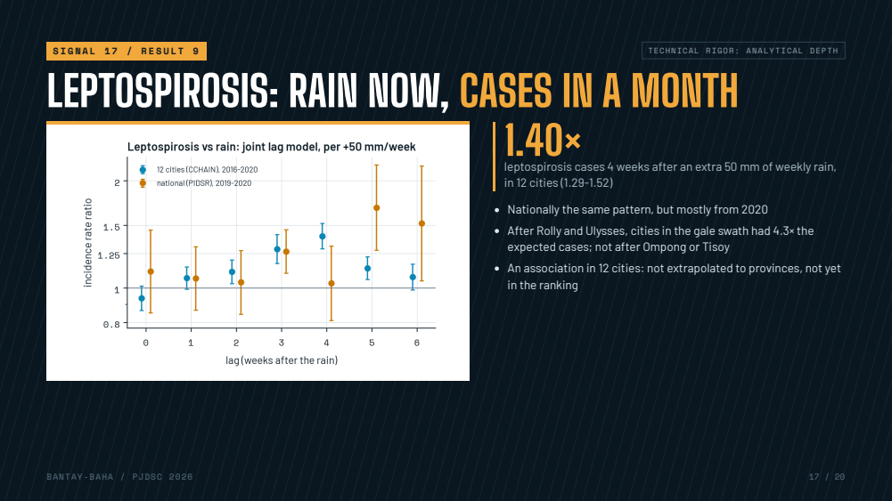
What it shows. Leptospirosis in 12 cities (Project CCHAIN): 1.40 times the cases 4 weeks after an extra 50 mm of weekly rain; after Rolly and Ulysses, cities in the gale swath had 4.3 times the expected cases.
Say it like this. "Using open city-level data from Project CCHAIN, the signal is clear: rain now, cases in about a month. It is not yet in the ranking because it covers only 12 cities."
Numbers to remember. 1.40x (95% CI 1.29-1.52) at 4 weeks per +50 mm; 4.3x after Rolly and Ulysses; none after Ompong or Tisoy.
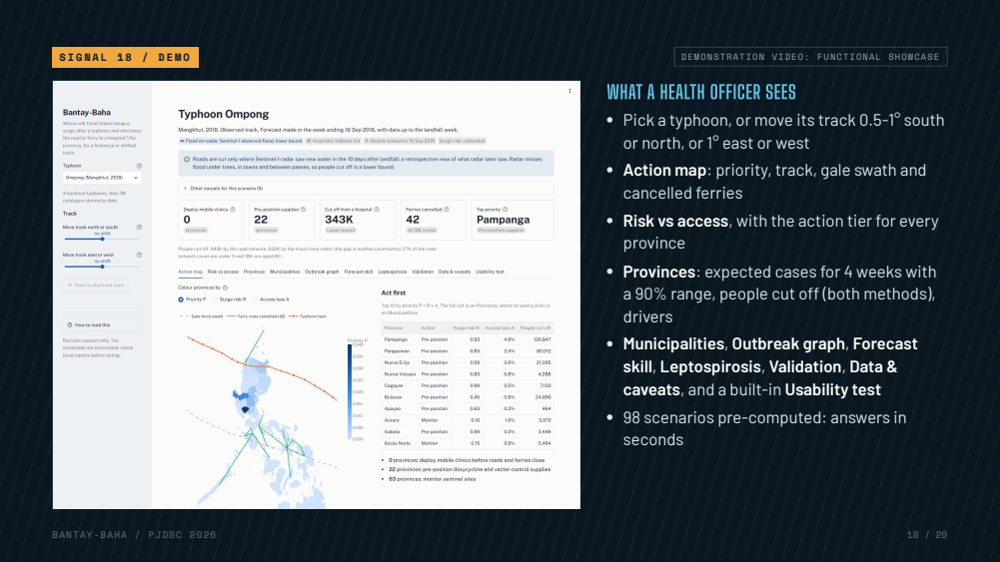
What it shows. The dashboard: pick a typhoon or shift its track, the action map, risk vs access, the ranked provinces with expected cases and people cut off, and the other tabs; 98 scenarios pre-computed.
Say it like this. "Here is the tool itself." Then play the demonstration video, or switch to the live dashboard and follow the demo script.
Numbers to remember. 98 scenarios = 4 typhoons x 15 tracks + 38 catalogue storms.
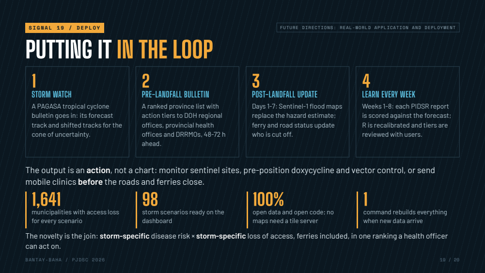
What it shows. How it would run for real: a PAGASA bulletin goes in (forecast track and shifted tracks), a ranked list with action tiers goes to DOH regional offices, provincial health offices and DRRMOs 48-72 h before landfall; Sentinel-1 updates it after landfall; each PIDSR report recalibrates it.
Say it like this. "The output is an action, not a chart: monitor sentinel sites, pre-position doxycycline and vector control, or send mobile clinics before the roads and ferries close. And it learns every week."
Numbers to remember. 1,641 municipalities; 98 scenarios; one command rebuilds everything when new data arrive.
If asked.
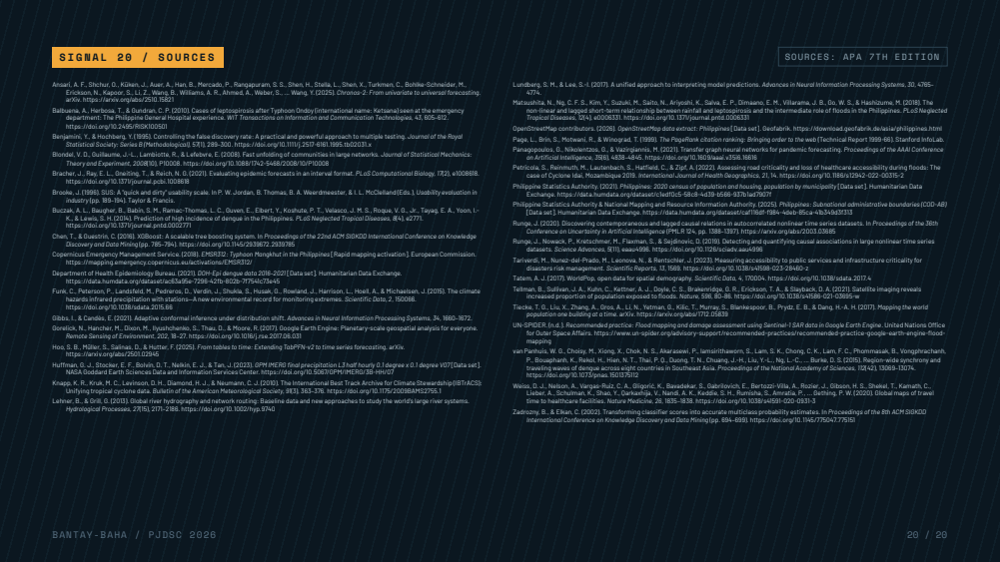
What it shows. The references in APA 7th edition: methods (PCMCI+, XGBoost, WIS, isotonic calibration, Chronos-2, TabPFN-TS, MPNN-LSTM) and data (DOH, PSA, COD-AB, CHIRPS, IMERG, IBTrACS, HydroRIVERS, WorldPop, OpenStreetMap, Copernicus EMS, UN-SPIDER).
Say it like this. Do not read it. "Our sources are on the last slide; everything is open data and open methods."